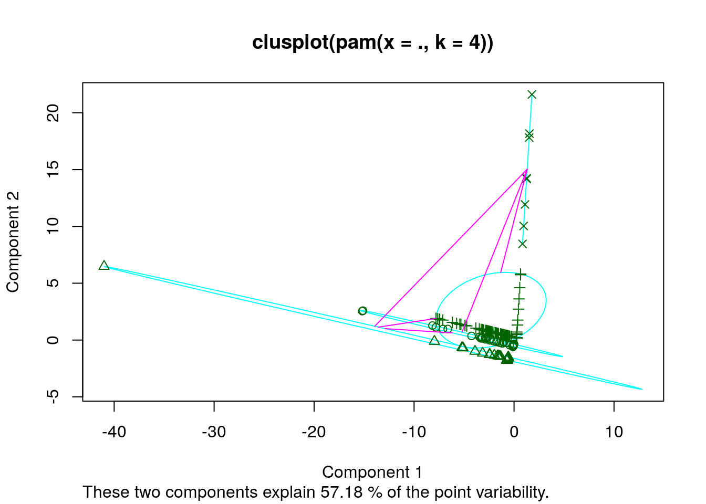

January 1, 0001
Introduction
I chose my data sets based on two viruses that have spread on a world scale, one of these viruses being the corona virus since it’s what’s on most peoples mind at the moment. The other virus that I chose was ebola which about 5 years ago brought out similar concers that are being evoked by carona. I wanted to compare these two viruses and see how they are infecting people and spreading worldwide! There is not as much information on carona as there is on ebola since it’s a relatively new virus, but it’s destruction and spread is similar. Both the datasets I found have the country’s and the dates that the virus infected, and it has the number of infected people! The ebola data was aquired through github and the corona data was aquired from a site that was looking into the infection rate of corona on a worldwide scale. I’m hoping to see if there are similar patterns between the two viruses and how many people they can infect in a certain time frame.
Packages
library(tidyverse)
library(dplyr)
library(ggplot2)
library(plotly)
library(cluster)
library(GGally)Data Sets:
These are the original datasets that were used. The ebola virus has data that was recorded for the span of three years, 2014-2016, while the corona virus only has two months recorded, January-February.
ebdat <- read.csv("https://data.humdata.org/dataset/0d089fa0-3567-4b01-9c03-39d340ff34e3/resource/c59b5722-ca4b-41ca-a446-472d6d824d01/download/ebola_data_db_format.csv")
crdat <- read.csv("https://raw.githubusercontent.com/CryptoKass/ncov-data/master/world.daily-confirmed.jhu.csv")glimpse(ebdat)## Observations: 17,585
## Variables: 4
## $ Indicator <fct> "Cumulative number of confirmed, probable and suspected Ebo…
## $ Country <fct> Guinea, Guinea, Guinea, Guinea, Guinea, Guinea, Guinea, Lib…
## $ Date <fct> 2015-03-10, 2015-03-10, 2015-03-10, 2015-03-10, 2015-03-10,…
## $ value <dbl> 3285, 2871, 392, 22, 2170, 1778, 392, 9343, 3150, 1879, 431…glimpse(crdat)## Observations: 18
## Variables: 36
## $ X <fct> 02/08, 02/07, 02/06, 02/05, 02/04, 02/03, 02/02,…
## $ Mainland.China <int> 37198, 31215, 30612, 24405, 24290, 20400, 17114,…
## $ Others <int> 61, 61, 0, 0, 0, 0, 0, 0, 0, 0, 0, 0, 0, 0, 0, 0…
## $ Singapore <int> 40, 30, 28, 28, 24, 18, 18, 18, 13, 10, 10, 7, 5…
## $ Thailand <int> 32, 25, 25, 25, 25, 19, 19, 19, 19, 14, 14, 14, …
## $ Hong.Kong <int> 26, 25, 24, 21, 18, 15, 15, 14, 12, 12, 10, 8, 8…
## $ Japan <int> 25, 25, 45, 22, 22, 20, 20, 20, 15, 11, 11, 7, 4…
## $ South.Korea <int> 25, 24, 23, 19, 16, 15, 15, 15, 11, 6, 4, 4, 4, …
## $ Taiwan <int> 17, 16, 16, 11, 11, 10, 10, 10, 10, 9, 8, 8, 5, …
## $ Malaysia <int> 16, 12, 12, 12, 10, 8, 8, 8, 8, 8, 7, 7, 4, 4, 3…
## $ Germany <int> 13, 13, 12, 12, 12, 12, 10, 8, 5, 4, 4, 4, 1, 0,…
## $ Vietnam <int> 13, 10, 10, 8, 8, 8, 6, 6, 2, 2, 2, 2, 2, 2, 2, …
## $ France <int> 11, 6, 6, 6, 6, 6, 6, 6, 5, 5, 5, 4, 3, 3, 3, 2,…
## $ Macau <int> 10, 10, 10, 10, 10, 8, 8, 7, 7, 7, 7, 7, 6, 6, 2…
## $ United.Arab.Emirates <int> 7, 5, 5, 5, 5, 5, 5, 4, 4, 4, 4, 0, 0, 0, 0, 0, …
## $ Australia <int> 15, 15, 14, 13, 13, 12, 12, 12, 9, 9, 7, 5, 5, 4…
## $ Canada <int> 7, 7, 5, 4, 4, 4, 4, 4, 3, 3, 3, 2, 1, 1, 0, 0, …
## $ India <int> 3, 3, 3, 3, 3, 3, 2, 1, 1, 1, 0, 0, 0, 0, 0, 0, …
## $ Italy <int> 3, 3, 2, 2, 2, 2, 2, 2, 2, 2, 0, 0, 0, 0, 0, 0, …
## $ Philippines <int> 3, 3, 2, 2, 2, 2, 2, 2, 1, 1, 0, 0, 0, 0, 0, 0, …
## $ UK <int> 3, 3, 2, 2, 2, 2, 2, 2, 2, 0, 0, 0, 0, 0, 0, 0, …
## $ Russia <int> 2, 2, 2, 2, 2, 2, 2, 2, 2, 0, 0, 0, 0, 0, 0, 0, …
## $ US <int> 12, 12, 12, 11, 11, 11, 9, 8, 7, 6, 5, 5, 5, 5, …
## $ Belgium <int> 1, 1, 1, 1, 1, 0, 0, 0, 0, 0, 0, 0, 0, 0, 0, 0, …
## $ Cambodia <int> 1, 1, 1, 1, 1, 1, 1, 1, 1, 1, 1, 1, 1, 0, 0, 0, …
## $ Finland <int> 1, 1, 1, 1, 1, 1, 1, 1, 1, 1, 1, 0, 0, 0, 0, 0, …
## $ Nepal <int> 1, 1, 1, 1, 1, 1, 1, 1, 1, 1, 1, 1, 1, 1, 1, 0, …
## $ Spain <int> 1, 1, 1, 1, 1, 1, 1, 1, 0, 0, 0, 0, 0, 0, 0, 0, …
## $ Sri.Lanka <int> 1, 1, 1, 1, 1, 1, 1, 1, 1, 1, 1, 1, 1, 0, 0, 0, …
## $ Sweden <int> 1, 1, 1, 1, 1, 1, 1, 1, 1, 0, 0, 0, 0, 0, 0, 0, …
## $ Ivory.Coast <int> 0, 0, 0, 0, 0, 0, 0, 0, 0, 0, 0, 0, 0, 0, 0, 0, …
## $ Mexico <int> 0, 0, 0, 0, 0, 0, 0, 0, 0, 0, 0, 0, 0, 0, 0, 0, …
## $ Brazil <int> 0, 0, 0, 0, 0, 0, 0, 0, 0, 0, 0, 0, 0, 0, 0, 0, …
## $ Colombia <int> 0, 0, 0, 0, 0, 0, 0, 0, 0, 0, 0, 0, 0, 0, 0, 0, …
## $ China <int> 0, 0, 0, 0, 0, 0, 0, 0, 0, 0, 0, 0, 0, 0, 0, 0, …
## $ United.States <int> 0, 0, 0, 0, 0, 0, 0, 0, 0, 0, 0, 0, 0, 0, 0, 0, …Tidying:
To tidy up the data I had to alter the corona data so that all the country’s would be under one column instead of them all haing their own columns. Once all the country’s were in the same column I had to make sure that the format for the date columns on both datasets matched. The reason the formats had to match was because this was the variable that I will be using to join the two datasets.
crtidy <- crdat %>%
pivot_longer(
cols = Mainland.China:United.States,
names_to = "Country",
values_to = "infc_rate"
) %>%
separate(X, into = c("Month", "Day"), sep = "/") %>%
add_column(Year = 2020) %>%
add_column(yick = "Corona") %>%
unite(Year, Month, Day, col = "Date", sep = "-") %>%
unite(yick, Country, col = "Cont", sep = "-")
ebtidy <- ebdat %>%
rename(infc_rate = value) %>%
add_column(oh = "Ebola") %>%
unite(oh, Country, col = "Cont", sep = "-") %>%
filter(Indicator == "Cumulative number of confirmed Ebola cases") %>%
select(-Indicator)
glimpse(crtidy)## Observations: 630
## Variables: 3
## $ Date <chr> "2020-02-08", "2020-02-08", "2020-02-08", "2020-02-08", "20…
## $ Cont <chr> "Corona-Mainland.China", "Corona-Others", "Corona-Singapore…
## $ infc_rate <int> 37198, 61, 40, 32, 26, 25, 25, 17, 16, 13, 13, 11, 10, 7, 1…glimpse(ebtidy)## Observations: 2,484
## Variables: 3
## $ Cont <chr> "Ebola-Guinea", "Ebola-Liberia", "Ebola-Sierra Leone", "Ebo…
## $ Date <fct> 2015-03-10, 2015-03-10, 2015-03-10, 2015-03-10, 2015-03-10,…
## $ infc_rate <dbl> 2871, 3150, 8428, 1, 7, 19, 1, 1, 4, 1, 2840, 3150, 8389, 7…Joining Datasets:
After joining the data sets I seperated the date column into year, month, and day variables since a lot of the analysis will require the isolation of the year. There are other tweeks as well to make the data join together more fuidly as seen in the code below.
pandemic1 <- ebtidy %>%
full_join(crtidy) %>%
separate(Date, into = c("year", "month", "day"), sep = "-") %>%
separate(Cont, into = c("virus", "country"),sep="-") %>%
mutate(country = recode(country,
"South.Korea" = "South Korea",
"Mainland.China" = "China",
"United States of America" = "USA",
"United.States" = "USA",
"United.Arab.Emirates" = "United Arab Emirates",
"Sri.Lanka" = "Sri Lanka",
"Hong.Kong" = "Hong Kong",
"Ivory.Coast" = "Ivory Coast",
"Guinea 2" = "Guinea",
"Liberia 2" = "Liberia"))
glimpse(pandemic1)## Observations: 3,114
## Variables: 6
## $ virus <chr> "Ebola", "Ebola", "Ebola", "Ebola", "Ebola", "Ebola", "Ebol…
## $ country <chr> "Guinea", "Liberia", "Sierra Leone", "United Kingdom", "Mal…
## $ year <chr> "2015", "2015", "2015", "2015", "2015", "2015", "2015", "20…
## $ month <chr> "03", "03", "03", "03", "03", "03", "03", "03", "03", "03",…
## $ day <chr> "10", "10", "10", "10", "10", "10", "10", "10", "10", "06",…
## $ infc_rate <dbl> 2871, 3150, 8428, 1, 7, 19, 1, 1, 4, 1, 2840, 3150, 8389, 7…Wrangling:
Specific data was pulled from the pandemic dataset to better understand the patterns or lack of patterns between the two viruses and how they spread.
Table 1
Table 1 displays the total number of viruses, country’s, and years that this data spans over. This is just a vauge overview of the kind of information this dataset presents.
pandemic1 %>%
select(-infc_rate, -day, -month) %>%
summarise_all(n_distinct)## virus country year
## 1 2 41 4Table 2
In Table 2 we can get a closer look into the year, month and type of virus that is infecting people, this is a more detailed look at the data from Table 1. We can observe that there are two types of viruses and we can follow how many countries have people infected by the virus in their respective year and month. For example we can tell through this table that the first record of the ebola outbreak was in August 2014 and had cases in 4 different countries.
pandemic1 %>%
group_by(year, month, virus) %>%
summarise_all(n_distinct) %>%
select(year, month, virus, country)## # A tibble: 20 x 4
## # Groups: year, month [20]
## year month virus country
## <chr> <chr> <chr> <int>
## 1 2014 08 Ebola 4
## 2 2014 09 Ebola 5
## 3 2014 10 Ebola 8
## 4 2014 11 Ebola 8
## 5 2014 12 Ebola 8
## 6 2015 01 Ebola 9
## 7 2015 02 Ebola 9
## 8 2015 03 Ebola 9
## 9 2015 04 Ebola 9
## 10 2015 05 Ebola 10
## 11 2015 06 Ebola 10
## 12 2015 07 Ebola 10
## 13 2015 08 Ebola 10
## 14 2015 09 Ebola 10
## 15 2015 10 Ebola 10
## 16 2015 11 Ebola 10
## 17 2015 12 Ebola 10
## 18 2016 03 Ebola 10
## 19 2020 01 Corona 34
## 20 2020 02 Corona 34Table 3
Table 3 gives us a different insight to the information that the pandemic dataset offers. In the previous tables there was information about how the viruses spread over the course of time, but Table 3 displays the highst number of known infected cases in a particular country based on the year. We can tell that out of the two viruses the Corona virus seems to have a higher infection count that ebola in the very short amount of time that it has been known to the public.
pandemic1 %>%
group_by(country, year, virus) %>%
summarise(total_infc = max(infc_rate)) %>%
arrange(desc(total_infc))## # A tibble: 62 x 4
## # Groups: country, year [62]
## country year virus total_infc
## <chr> <chr> <chr> <dbl>
## 1 China 2020 Corona 37198
## 2 Sierra Leone 2015 Ebola 8704
## 3 Sierra Leone 2016 Ebola 8704
## 4 Sierra Leone 2014 Ebola 7354
## 5 Guinea 2015 Ebola 3351
## 6 Guinea 2016 Ebola 3351
## 7 Liberia 2015 Ebola 3153
## 8 Liberia 2016 Ebola 3151
## 9 Liberia 2014 Ebola 3110
## 10 Guinea 2014 Ebola 2397
## # … with 52 more rowsTable 4
This table shows the average number of infected people for both virus during a specific year over based on the number of countries that have infected cases. Ebola has a higher average infection, 1480 people at its hightest (2016), since it has data from a span of three years and didn’t spread to a total of 10 countries by 2016. On the other hand, Corona only has data from two months and is hitting an average of 392 people over a span of 34 countries. If we were to compile more recent data we might have witnessed a much larger average infection rate.
pandemic1 %>%
group_by(virus, year) %>%
summarise(avg_spread = mean(infc_rate), countries = n_distinct(country))## # A tibble: 4 x 4
## # Groups: virus [2]
## virus year avg_spread countries
## <chr> <chr> <dbl> <int>
## 1 Corona 2020 391. 34
## 2 Ebola 2014 1085. 8
## 3 Ebola 2015 1480. 10
## 4 Ebola 2016 1271. 10Visualizing:
For the sake of the visualization I reassigned the numbers in the month column to include the name of the month to make it easier to decipher when reading the graphs.
pandemic2 <- pandemic1 %>%
mutate(month = recode(month,
"01" = "01.January",
"02" = "02.February",
"03" = "03.March",
"04" = "04.April",
"05" = "05.May",
"06" = "06.June",
"07" = "07.July",
"08" = "08.August",
"09" = "09.September",
"10" = "10.October",
"11" = "11.November",
"12" = "12.December"))Graph 1
Graph 1 shows how many people ebola and corona infected each month based on the year. The corona graph shows a much higher number of infected cases comared to the ebola data for the two months that it has been present. There are also several points per month which is for the countries with infected cases, and the darker the spot just indicated that there is more than one country with that same number of infected people. For the corona virus there is a really dense circle close to zero in February, and that’s because there were several countries that discovered their first cases that month. While for the ebola virus, in 2014 there was a rise of the virus as it started to infect people and spead, but then in 2015 and 2016 it becomes static and starts decreasing around February of 2016 where the mosst dense point is close to zero.
pandemic2 %>%
ggplot(aes(month, infc_rate, fill = year)) +
geom_point(size = 4, shape = 21, alpha = 0.5) +
facet_wrap(~virus) +
xlab("Month") +
theme(axis.text.x = element_text(angle=65, vjust = 0.6)) +
ylab("Number of People Infected") +
ggtitle("Infection Spread for Corona vs Ebola") +
scale_fill_brewer(palette = "Spectral")Graph 2
This is a really simple graph that just shows the max number of countries were infected by which virus based on the year. When you hover over the bars it will tell you the max number and which virus it is! It can be noted that for corona the number is 34 and for ebola it is 10. This information shows how much faster corona is spreading compared to ebola. Corona is a more sneaky virus, making it harder to identify and isolate compared to ebola which was isolated relatively quickly if it only infected a total of 10 counties in the span of three years.
c <- pandemic2 %>%
group_by(country, year, virus) %>%
summarise(total_infc = max(infc_rate)) %>%
arrange(desc(total_infc)) %>%
ggplot(aes(year, fill = virus)) +
geom_bar() +
xlab("Year") +
ylab("Number of Countries") +
ggtitle("Total Number of Countries Effected by Viruses") +
theme(legend.position="none")
ggplotly(c)Graph 3
Graph 3 allows us to really disect the spread of a perticular virus in a specific county to see the rate at wich it spreads. It shows the number of infected people in Guinea for each month throughout the years that there were ebola cases! When you hover over the bars it shows what the max number of infected individuals there were and what month this number was recorded. It shows how in 2015 it stagnated at 3351 people in November and stayed that way till March of 201.
guineaGraph <- pandemic2 %>%
filter(country == "Guinea") %>%
group_by(year, month) %>%
summarise(max_count = max(infc_rate))
g <- ggplot(guineaGraph, aes(x=year, y=max_count, fill= month)) +
geom_bar(stat = "identity", position = "dodge") +
ylab("Number of People Infected") +
xlab("Year") +
ggtitle("Ebola Infections in Guinea") +
theme(legend.position="none")
ggplotly(g)Clustering
This shows how the virus data compares to each other by comparing the number of infections per year for ebola and corona. This data was a bit hard to cluster and compare since the two viruses did not occur in simial time frames and didn’t have too many overlapping countries they effected, especially because corona spread aobut 3x more than ebola. This data does show how the ebola data clusters through out the years in which they all have very low correlations.
Pairwise Combinations
endgame <- pandemic1 %>%
select(-month, -country, -day) %>%
group_by(year) %>%
mutate(rn = row_number()) %>%
pivot_wider(names_from = year, values_from = infc_rate) %>%
mutate_all(~replace(., is.na(.), 0))
viCluster <- endgame %>%
select(-virus, -rn) %>%
pam(4)
viCluster## Medoids:
## ID 2015 2014 2016 2020
## [1,] 445 3151 0 0 0
## [2,] 1047 8665 0 0 0
## [3,] 265 1 0 0 0
## [4,] 2349 0 0 0 24290
## Clustering vector:
## [1] 1 1 2 3 3 3 3 3 3 3 1 1 2 3 3 3 3 3 3 1 1 2 3 3 3 3 3 3 3 3 3 3 3 1 1 2 3
## [38] 1 1 2 3 3 3 3 3 3 1 1 2 3 3 3 3 3 3 1 1 2 3 3 3 3 3 3 1 1 2 3 3 3 3 3 3 1
## [75] 1 2 3 3 3 3 3 3 1 1 2 3 3 3 3 3 3 1 1 2 3 3 3 3 3 3
## [ reached getOption("max.print") -- omitted 2738 entries ]
## Objective function:
## build swap
## 173.1463 164.6451
##
## Available components:
## [1] "medoids" "id.med" "clustering" "objective" "isolation"
## [6] "clusinfo" "silinfo" "diss" "call" "data"viFinal <- endgame %>%
mutate(cluster=as.factor(viCluster$clustering))
ggpairs(viFinal, columns = 3:6, aes(color = virus))
We can even run a silhouette plot for the clusters of the four variables that are being compared to see how related they are to each other.
Silhouette plot
plot(viCluster, which = 1)
This plot shows us that there is a low correlation between the year variables based on the infections, about %57 which. The only correlation that is shown is what is between 2014-2016 because those are the years that had ebola data allowing it to be compared.
Overall Analysis
This project was super fun to organize all the data; there’s a lot more that could be done but then this would have been a really long read. I think this would be really great to come back to by the end of 2020 when there will be more information on the corona virus and more data to work with. It would allow a better comparison to ebola especially to look at the spread. Another thing is if there was more information, it would give data about deaths involved with the virus. I think that would also be usuful to compare the two viruses to see the deadliness of each virus, it would also make a much nicer clusters to look at.